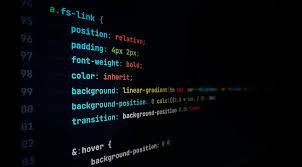

All modern websites and web applications are built using three fundamental
technologies: HTML, CSS and JavaScript. These are the language of the
web.
In this post, let's foucs on HTMl. We will learn what HTML is all about.
What is HTML?

HTML stands for HyperTextMarkupLanguage. It's a markup language that web
developers use to structure and describe the
content of a webpage (not a
programming language).
HTML cosists of elements that describe
different types of content:
paragraphs, links, images, video,
etc Web browers understand
HTML and render HTML code as websites.
In HTML, each element is made up of 3 parts:
- The opening tag
- The closing tag
- The auctual tag
What is CSS?

It allows you to apply styles to HTML documents by prescribing colors, fonts, spacing, and positioning.
The main advantages are separation of content (in HTML) and styling (in CSS) and the same CSS rules can be used across all pages and not have to be rewritten.
HTML uses tags and CSS uses rule sets.
CSS styles are applied to the HTML element using selectors.
CSS can be used for text styling — for example, for changing the color and size of headings and links. It can be used to create a layout — for example, turning a single column of text into a layout with a main content area and a sidebar for related information. It can even be used for effects such as animation. Have a look at the links in this paragraph for specific examples.
What is JavaScript?
JavaScript (JS) is a programming language used to create interactive web pages. It is a client-side scripting language that is a core technology of the World Wide Web.
JavaScript (JS) is a lightweight interpreted (or just-in-time compiled) programming language with first-class functions. While it is most well-known as the scripting language for Web pages, many non-browser environments also use it, such as Node.js, Apache CouchDB and Adobe Acrobat. JavaScript is a prototype-based, multi-paradigm, single-threaded, dynamic language, supporting object-oriented, imperative, and declarative (e.g. functional programming) styles.